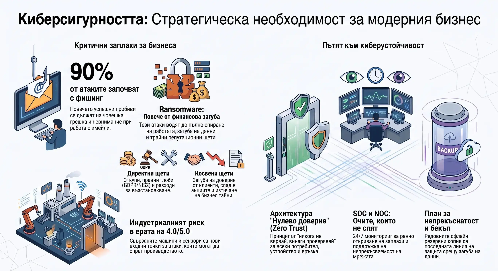

Zero Trust · Network access · Segmentation
Zero Trust Network: мрежова сегментация и достъп до ресурси
Zero Trust Network описва мрежовия слой на по-широка Zero Trust архитектура: кой може да комуникира с кой ресурс, по какъв път и при какви условия. Целта е да се ограничи доверието, което иначе може да следва само от вътрешна мрежова позиция, и да се намалят ненужните пътища между системите.

⚠️ Важна бележка: Тази публикация е с информационна и образователна цел и не представлява юридическо или правно тълкуване на приложимото законодателство. Обстоятелствата варират, а нормативните изисквания се променят. При конкретен казус се консултирайте с квалифициран юрист.
Накратко: Zero Trust Network не означава просто повече VLAN-и, нов firewall или задължително премахване на VPN. Това е целенасочено контролиране на комуникационните пътища към ресурси, съчетано с identity, device posture, policy enforcement и наблюдение. Сегментацията е един възможен контрол, не цялата архитектура.
Какво покрива мрежовият слой?
Мрежовите контроли определят кои пътища са възможни между потребителски устройства, администраторски среди, workloads и приложения. В Zero Trust дизайн те подпомагат достъпа до ресурс, вместо да приемат, че достижимостта от „вътрешната мрежа“ сама по себе си означава разрешение.
Това може да включва идентифициране на ресурси и комуникационни зависимости, ограничаване на ненужния east-west трафик, отделяне на management plane, контролирани access gateways и логване на позволени/отказани опити. Конкретната комбинация зависи от това къде са ресурсите и кои технически точки могат надеждно да прилагат политиките.
Сегментация е полезна, но не е достатъчна
Сегментацията разделя мрежа или workloads на по-малки области и ограничава кои системи могат да комуникират. Това може да затрудни ненужното странично придвижване и да намали обхвата на грешка или компрометиране. Zero Trust добавя въпросите кой/какво отправя заявката, кой ресурс е поискан и при какви условия политиката трябва да я разреши.
| Подход | Основен принос | Какво самостоятелно не доказва |
|---|---|---|
| VLAN/firewall zones | Разделят адресни пространства и задават правила между зони. | Че потребителят или workload-ът е идентифициран или разрешен за конкретното приложение. |
| Microsegmentation | Ограничава комуникацията между избрани workloads/системи по по-фини правила. | Че са покрити всички ресурси, identities, device signals или бизнес контексти. |
| VPN | Може да осигурява криптиран транспорт и контролиран отдалечен път. | Че след свързване достъпът е ограничен само до нужния ресурс и остава подходящ при промяна на риска. |
| Identity-aware access proxy/gateway | Може да посредничи достъп до приложения и да прилага identity/context политика. | Че други пътища, service-to-service комуникация и локални мрежови потоци също са защитени. |
Тези механизми могат да се комбинират. Сравнението не е избор на една технология за всички случаи; то помага да се види кои пътища и решения остават извън покритието.
Как се проектира мрежовият достъп?
- Открийте ресурсите и потоците. Съберете inventory на приложения, устройства, workloads и зависимости; проверете кои потоци са реално нужни.
- Определете границите и собствениците. Свържете ресурсите с бизнес услуга, критичност, собственик, данни и очаквани роли.
- Задайте policy по ресурс. Опишете субект, действие, ресурс и наличните identity/device/context сигнали; не използвайте мрежов адрес като единствен критерий за доверие.
- Изберете enforcement точки. Те могат да са host/workload controls, gateways, proxies, network controls или cloud-native политики според потока и платформата.
- Пилотирайте с наблюдение. Започнете с ограничен ресурсен обхват; регистрирайте legitimate flows и блокиранията, уточнете нужните изключения и тествайте отказите.
- Разширявайте и преглеждайте. Добавяйте сегменти и приложения постепенно, проверявайте policy drift, неизползвани правила, bypass paths и ефекта върху оперативните услуги.
Планирайте внимателно за legacy и OT
В наследени или индустриални среди активите може да не поддържат модерни identity агенти или криптирани протоколи, а прекъсване на комуникация може да засегне процеси и безопасност. Първо документирайте зависимости, owners и ограничения; после тествайте в подходяща среда и съгласувайте промяната със собствениците на системите. Не прилагайте blanket deny правила без валидиране на необходимите потоци и аварийни процедури.
Когато директна интеграция не е възможна, може да се използват компенсиращи мрежови контроли и мониторинг, описани като ограничения и план за постепенно подобрение. Изключенията трябва да са ограничени, одобрени, логвани и периодично преглеждани.
Как да измервате напредъка?
- дял на критичните приложения и потоци с известен owner и актуална карта на зависимостите;
- пътища към ресурси, които вече минават през определени enforcement точки;
- неизползвани или прекомерно широки правила и отворени exception-и;
- видимост върху отказани заявки, policy changes и загуба на telemetry;
- резултати от контролирани тестове за валидни и невалидни access paths;
- оперативни откази, latency и service impact след промяна на политиките.
Метриките трябва да показват реално покритие и риск, не само брой внедрени сегменти или закупени продукти. Измервайте и изключенията, слепите зони и оперативното въздействие.
Често задавани въпроси
Zero Trust Network същото ли е като Zero Trust Architecture?
Не точно. Zero Trust Network описва мрежовите контроли и комуникационните пътища в по-широка архитектура, която обхваща и идентичности, приложения, устройства, политики и данни.
Достатъчна ли е мрежовата сегментация за Zero Trust?
Не. Сегментацията може да ограничи пътищата и обхвата на достъп, но трябва да се свърже с identity-aware политики, управление на устройства, ресурсни права и наблюдение.
Zero Trust Network премахва ли нуждата от VPN?
Не непременно. VPN може да осигурява криптиран транспорт, но не определя самостоятелно кой има достъп до конкретен ресурс и при какви условия.
Как се прилага Zero Trust в legacy или OT среда?
Започнете с видимост, карта на зависимостите и ограничен пилот. Промените по legacy/OT сегменти изискват оценка на наличността, безопасността, съвместимостта и одобрение от собствениците на процесите.